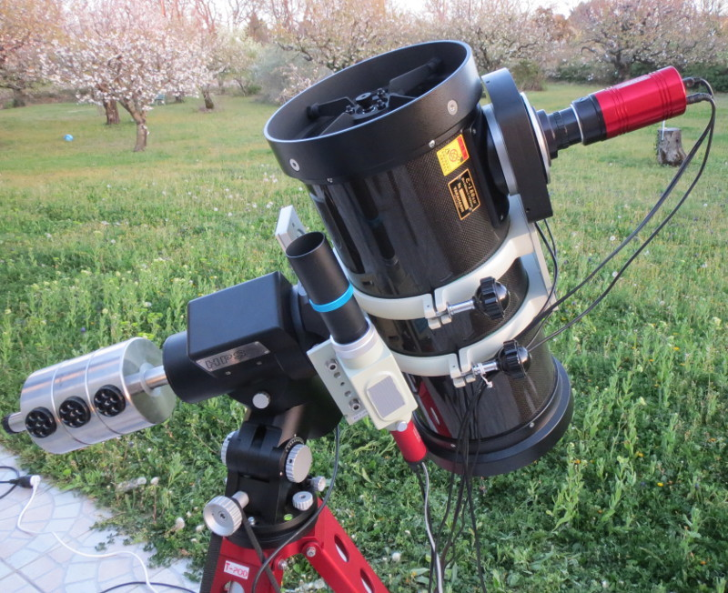

Telescope Lab
Do you have a telescope that you would like to learn how to operate or get help with setting up? Our staff members will be on hand at the start of each session to give you a one on one tutorial. Learn how to properly assemble and balance your telescope, align the finderscope and computer, collimate the mirrors, and choose the appropriate eyepieces. We can even help you learn how to find objects in the sky with your own telescope!
These sessions are for smaller groups and start earlier than the general observation sessions. We can help you set up and use your telescope before it gets too dark. Consult the schedule for start times.
Agenda
- Basic principles of telescopes
- Learn how to setup your EQ mount
- Learn how to setup your AZ mount
- Learn how to collimate your telescope (mirror alignment)
- Telescope clinic (fix and tune your telescope) - Additional fees may apply
Price
- Child (5-15yrs): $25
- Adult (16yrs+): $50
Location
 Telescope Labs are taking place from Maraetai Beach, Maraetai, at just 40 minutes from the Auckland CBD. This beatiful location offers an stuning views of the night sky and low light pollution comming from the city. This is key to allow long-term expositions to capture amazing pictures of the deep sky objects like nebulae and galaxies.
Telescope Labs are taking place from Maraetai Beach, Maraetai, at just 40 minutes from the Auckland CBD. This beatiful location offers an stuning views of the night sky and low light pollution comming from the city. This is key to allow long-term expositions to capture amazing pictures of the deep sky objects like nebulae and galaxies.
Code of Conduct
In order to insure safety, protect equipment and to enhance everyone's enjoyment, we ask that you follow the Code of Conduct:
- Pets are not permitted nearby the telescopes.
- Smoking and alcoholic beverages are never permitted within the area.
- Minors under the age of 16 must be accompanied by a parent or guardian at all times.
- Aerosol bug spray repellent may only be applied away from the telescopes. (Sprays produce a fine mist which can settle on optical surfaces and is very difficult to clean.)
- Remove any trash and keep the premises clean.
- Visitors should bring a flashlight with RED light to use for the walk from the parking lot to the observatory and for reading star maps.